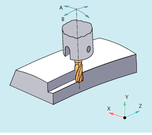
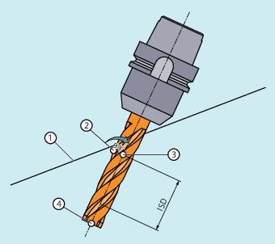

Die hier benutzte Variante des Umfangsfräsens ist durch die Vorgabe einer Bahn (Leitlinie) und der zugehörigen Orientierung realisiert. Bei dieser Art der Bearbeitung ist auf der Bahn die Werkzeugform ohne Bedeutung. Entscheidend ist allein der Radius am Werkzeugeingriffspunkt.
Umfangsfräsen
Das Anfahrverhalten ist bei den 3D-Varianten der Werkzeugradiuskorrektur immer NORM.
An Außenecken werden beim Umfangsfräsen mit 3D-WRK analog zu den Verhältnissen bei der 2½D-WRK die G-Befehle der Gruppe 18 (Eckenverhalten Werkzeugkorrektur) ausgewertet:
G450: Übergangskreis (Werkzeug umfährt Werkstückecken auf einer Kreisbahn)
Im Gegensatz zur Lösung bei der 2½D-WRK ist das eingefügte Konturelement an einer Außenecke immer ein Kreis mit dem Radius 0, auf den die Werkzeugradiuskorrektur so wirkt wie auf jede andere programmierte Bahn auch. Es ist nicht möglich, an Stelle der Kreise Kegelschnitte einzufügen. Die Adresse DISC hat deshalb in diesem Fall keine Bedeutung und wird nicht ausgewertet.
G451: Schnittpunkt der Äquidistanten (Werkzeug schneidet in der Werkstückecke frei)
Der Schnittpunkt wird bestimmt, indem die Offsetkurven der beiden beteiligten Sätze verlängert werden und deren Schnittpunkt in der Ebene senkrecht zur Werkzeugorientierung an der Ecke bestimmt wird.
Das Schnittpunktverfahren (G451) wird nicht verwendet, wenn zwischen den beteiligten Verfahrsätzen mindestens ein Satz eingefügt ist, der eine Änderung der Werkzeugorientierung enthält. In einem solchen Fall wird an der Ecke immer ein Kreis eingefügt.
Über die G-Befehle ORIC und ORID kann festgelegt werden, ob Orientierungsänderungen, die zwischen den beiden die Ecke bildenden Verfahrsätzen programmiert wurden, vor Beginn des eingefügten Kreissatzes (ORID) oder gleichzeitig mit diesem (ORIC) ausgeführt werden.
Die Eintauchtiefe des Fräsers ist der Abstand des Fräserhilfspunkts von der Werkzeugspitze.
Der Fräserhilfspunkt ist die senkrechte Projektion des Fräserbearbeitungspunkts auf der programmierten Bahn auf die Werkzeuglängsachse.
Mit der Eintauchtiefe wird somit die Lage des Bearbeitungspunkts auf der Mantelfläche des Werkzeugs eingestellt.
① | Programmierte Bahn |
② | Fräserbearbeitungspunkt |
③ | Fräserhilfspunkt |
④ | Fräserspitze |
ISD | Eintauchtiefe (InSertion Depth) |
Eintauchtiefe
Die auf ein Differenzwerkzeug bezogene 3D-WRK für das Umfangsfräsen wird durch den Befehl CUT3DCD aktiviert. Sie ist anzuwenden, wenn sich die programmierte Kontur auf die Mittelpunktsbahn eines Normwerkzeugs bezieht und die Bearbeitung mit einem davon abweichenden Werkzeug erfolgt. Bei der Berechnung der 3D-Werkzeugradiuskorrektur werden dann nur der Verschleißwert des Radius des aktiven Werkzeugs ($TC_DP15) und die gegebenenfalls programmierten Werkzeugkorrekturoffsets OFFN und TOFFR/TOFFLR eingerechnet. Der Grundradius ($TC_DP6) des aktiven Werkzeugs wird nicht eingerechnet.
Bei dieser 3D-Werkzeugradiuskorrektur wird eine Abweichung des Fräserradius kompensiert, indem in Richtung der Flächennormalen der zu bearbeitenden Fläche zugestellt wird. Dabei bleibt die Ebene, in der die Stirnseite des Fräsers liegt unverändert, wenn die Eintauchtiefe ISD gleich geblieben ist. Ein Fräser mit z. B. kleinerem Radius gegenüber einem Normwerkzeug würde dann den Taschenboden, der auch die Begrenzungsfläche darstellt, nicht erreichen. Für eine automatische Zustellung des Werkzeugs muss der Steuerung diese Begrenzungsfläche bekannt sein, siehe Kapitel "3D-Umfangsfräsen unter Berücksichtigung einer Begrenzungsfläche (CUT3DCC, CUT3DCCD)".
| Hinweis |
Bei Verwendung der Werkzeugradiuskorrektur CUT3DCD in Kombination mit der lizenzpflichtigen Option "Advanced Surface" oder "Top Surface" sind die Einstellempfehlungen bezüglich "Advanced Surface" / "Top Surface" zu beachten! Zur Überprüfung der eingestellten Daten steht über das SIOS-Portal ein spezielles Prüfprogramm zur Verfügung. → Prüfprogramm für |